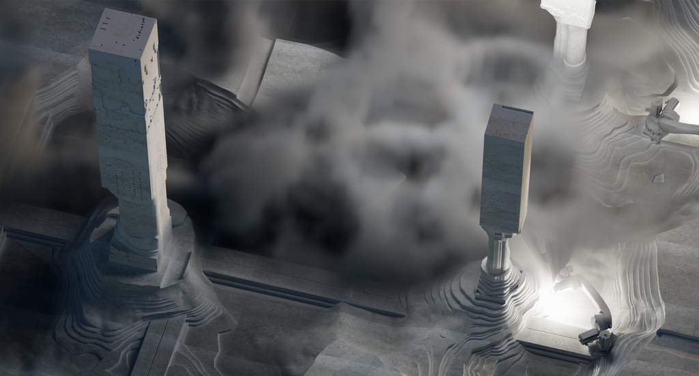
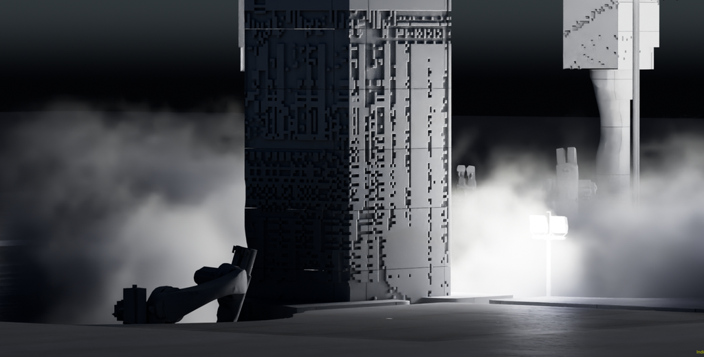
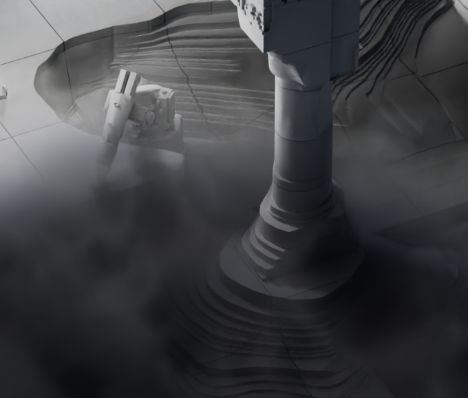
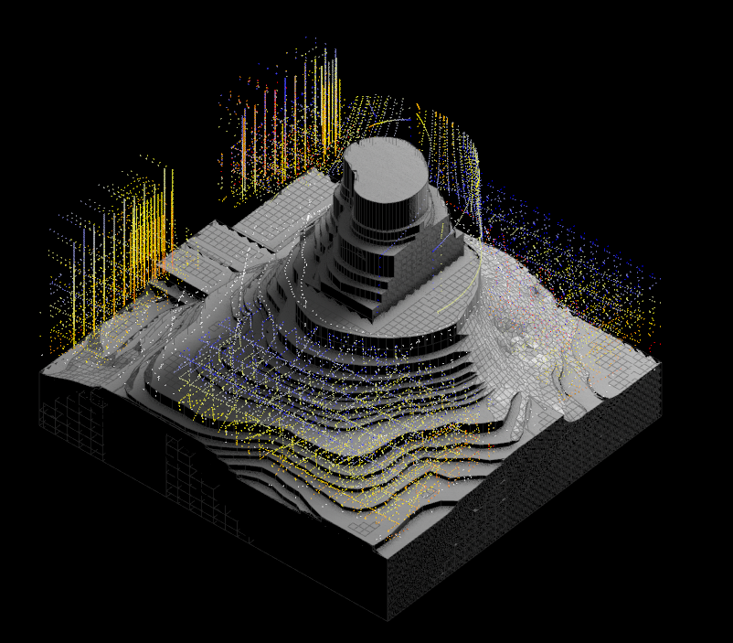
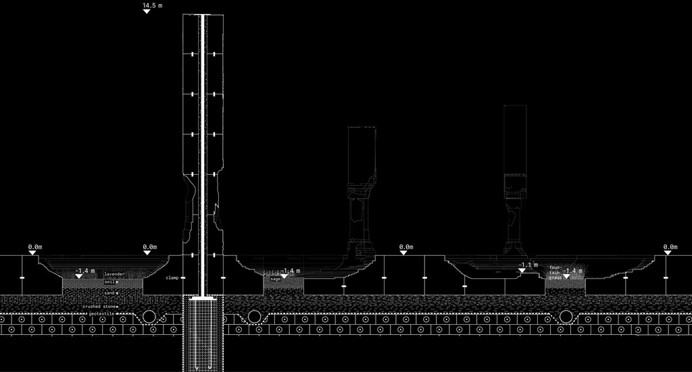
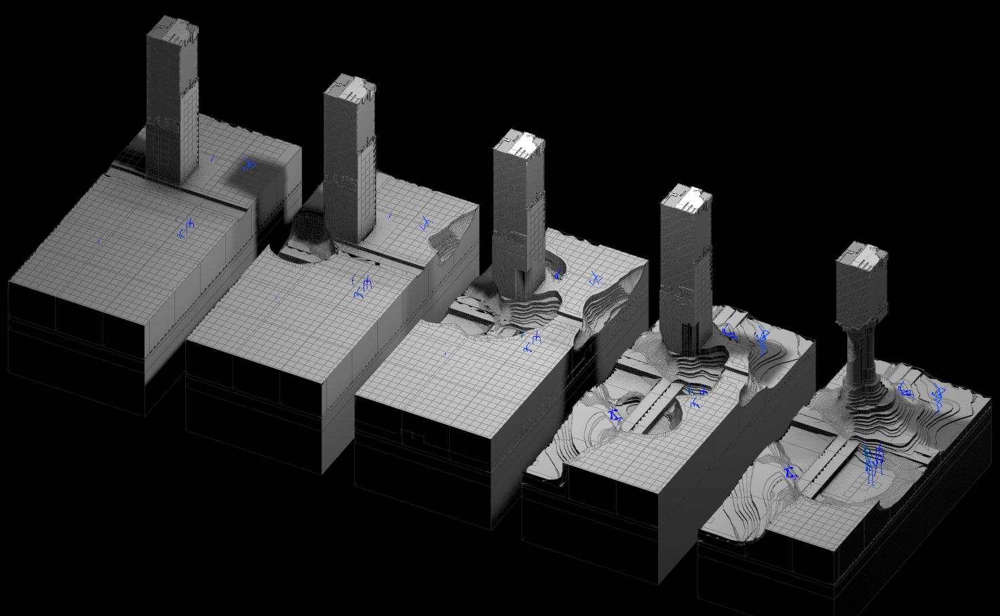

limestone · robotic carving · automated architecture · Dammam

concept
a robotic arm carves limestone monoliths in situ. each tower emerges from a single block, sequenced by toolpath rather than assembly. the site becomes both quarry and construction yard.

Ancient craftsmen once measured using parts of the human body: the cubit based on the length of a forearm, the inch on the width of a thumb.
Le Corbusier designed his buildings around the Modulor, a scale derived from human body proportions.
We once understood our world through systems that positioned ourselves — human scale, vision, and patterns of occupation — at the center of the structures we design.
In the age of robotics, however, the body is no longer the primary measure of space. Instead, it is increasingly the machines that occupy these spaces that define the parameters of the architecture containing them — an architecture whose form and materiality configures itself to anticipate the logics of machine perception.

As Saudi Arabia's Vision 2030 reshapes the kingdom's architectural landscape, we believe architects can harness the country's well-developed robotic manufacturing capabilities to expand spatial practice. Architecture has always been defined by prevailing means of production. Stonemasons once carved column capitals with rudimentary tools; modern architects harnessed prefabricated components made possible by industrialization.

We propose a collection of four monolithic sculptures, carved from locally sourced limestone blocks through the full 5-meter extension of robotic arms controlled by procedural paths.
The sculptures emerge over several weeks, with the landscape reaching 35m by 30m and gardens positioned 1.4 meters below street level.

.jpg)
.png)

.png)